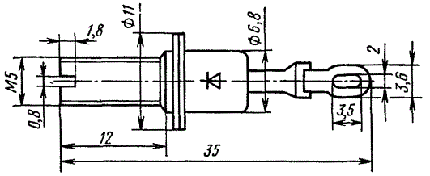
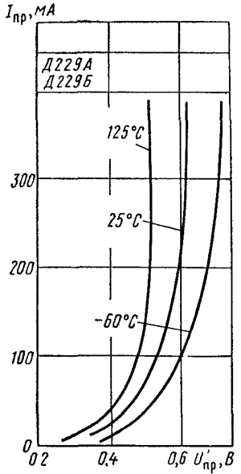
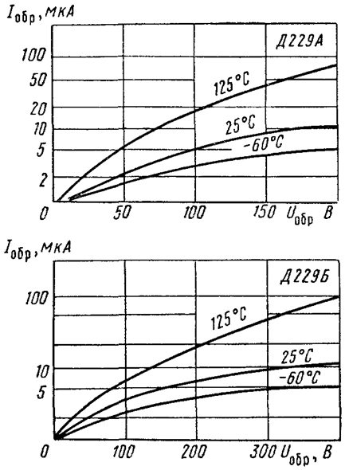

Выпрямительные диоды Д229
(Д229А, Д229Б, Д229В, Д229Г, Д229Д, Д229Е, Д229Ж, Д229И, Д229К, Д229Л)
Диоды Д229 - кремниевые, диффузионные. Предназначены для преобразования переменного напряжения с частотой до 1 кГц в постоянное. Корпус металлостеклянный с жесткими выводами.
Обозначение типа и схема соединения электродов с выводами приводятся на корпусе.
Масса диода не более 3,5 г.

Рис. 1 - Размеры диода Д229
Таблица 1
| Тип прибора | Предельные значения параметров при Т=25°С |
Значения параметров при Т=25°С |
Тк макс (Тп), °С |
|||||
|---|---|---|---|---|---|---|---|---|
| Uобр макс (Uобр и макс), B |
Iпр макс (Iпр и макс), мА |
Iпрг, A |
fраб (fмакс) kГц |
Uпр B |
при Iпр мА |
Iобр, мкА |
||
| Д229 А | 200 (200) | 400 | 10 | 3,0 | 1,0 | 400 | 50 | 125 |
| Д229 Б | 400 (400) | 400 | 10 | 3,0 | 1,0 | 400 | 50 | 125 |
| Д229 В | 100 (100) | 400 | 10 | 3,0 | 1,0 | 400 | 200 | 125 |
| Д229 Г | 200 (200) | 400 | 10 | 3,0 | 1,0 | 400 | 200 | 125 |
| Д229 Д | 300 (300) | 400 | 10 | 3,0 | 1,0 | 400 | 200 | 125 |
| Д229 Е | 400 (400) | 400 | 10 | 3,0 | 1,0 | 400 | 200 | 125 |
| Д229 Ж | 100 (100) | 700 | 10 | 3,0 | 1,0 | 700 | 200 | 85 |
| Д229 И | 200 (200) | 700 | 10 | 3,0 | 1,0 | 700 | 200 | 85 |
| Д229 К | 300 (300) | 700 | 10 | 3,0 | 1,0 | 700 | 200 | 85 |
| Д229 Л | 400 (400) | 700 | 10 | 3,0 | 1,0 | 700 | 200 | 85 |
Таблица 2
| Одиночные импульсы прямого тока при tи=<10мс, T=-60°С...+85°С
(время между двумя импульсами не менее 15 минут), А |
10 А |
| Частота без снижения электрических режимов, Гц | 1100 Гц |
| Температура окружающей среды, °С | -60°С...+125°С |
Условные обозначения электрических параметров диодов
Примечание:
Допускается работа диодов на емкостную нагрузку, при этом, эффективное значение тока через диод не должно превышать 1,57Iпр ср макс.
 |
 |
Рис. 2 - Вольтамперные характеристики диодов Д229